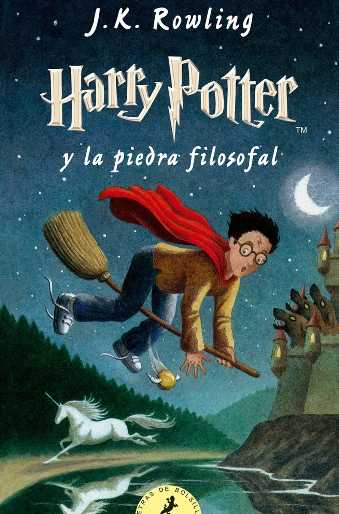

Juego de tronos
Tras el largo verano, el invierno se acerca a los Siete Reinos. Lord Eddars Stark, señor de Invernalia, deja sus dominios para unirse a la corte del rey Robert Baratheon el Usurpador, hombre díscolo y otrora guerrero audaz cuyas mayores aficiones son comer, beber y engendrar bastardos. Eddard Stark desempeñará el cargo de Mano del Rey e intentará desentrañar una maraña de intrigas que pondrá en peligro su vida... y la de los suyos.

El Temor de un Hombre Sabio
El hombre había desaparecido. El mito no. Músico, mendigo, ladrón, estudiante, mago, trotamundos, heroe y asesino, Kvothe había borrado su rastro. Y ni siquiera ahora que le han encontrado, ni siquiera ahora que las tinieblas invaden los rincones del mundo, está dispuesto a regresar. Pero su historia prosigue, la aventura continúa, y Kvothe seguirá contándola para revelar la verdad tras la leyenda.

Harry Potter y La Piedra Filosofal
Harry Potter se ha quedado huérfano y vive en casa de sus abominables tíos y del insoportable primo Dudley. Harry se siente muy triste y solo, hasta que un buen día recibe una carta que cambiará su vida para siempre. En ella le comunican que ha sido aceptado como alumno en el colegio interno Hogwarts de magia y hechicería.